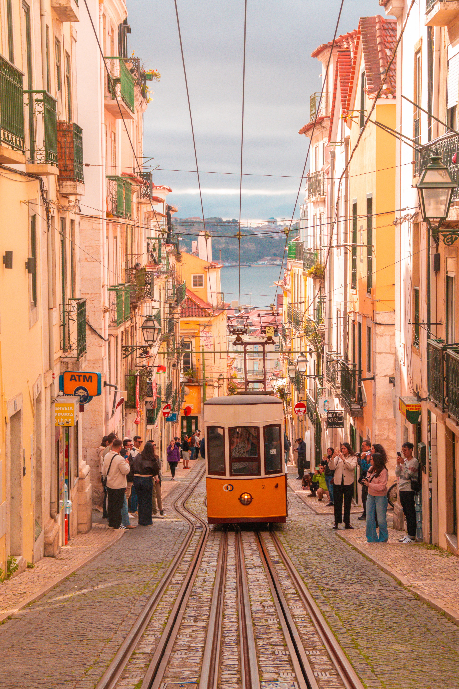

Lissabon, Portugal
Steile Gassen, gelbe Straßenbahnen und ein Ausblick auf den Tejo, der sich bei jedem Wetter lohnt. Lissabon eignet sich gut für ein verlängertes Wochenende und lässt sich zu Fuß oder mit der historischen Linie 28 erkunden.